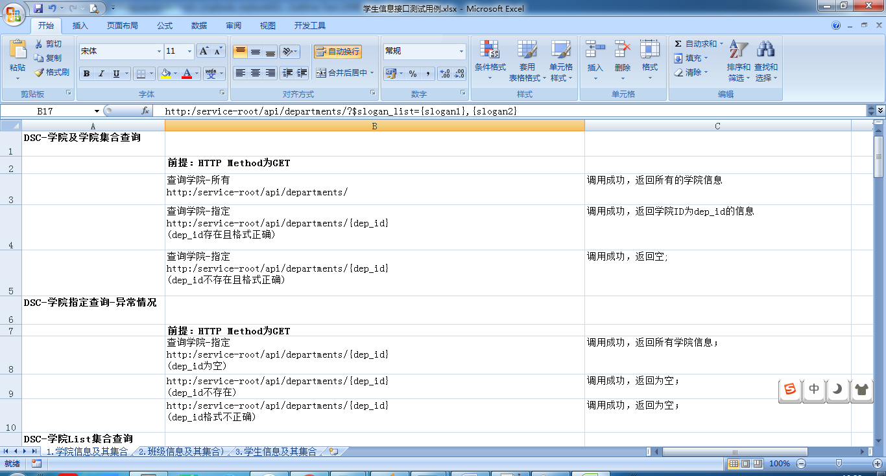

接口用例设计
目标
- 掌握接口用例设计技巧
- 理解接口用例设计时划分颗粒度
1. 用例设计原则
1. 覆盖所有的必选参数
2. 组合可选参数
3. 参数边界值
4. 如果参数的取值范围是枚举变量，需要覆盖所有枚举值
5. 空数据
6. 包含特殊的字符
7. 越界的数据
8. 错误的数据
2. 用例格式
| 用例编号 | 用例名称 | 方法 | 测试步骤 | 预期结果 | 是否通过 | 备注 |
|---|---|---|---|---|---|---|
3. 用例实现示例：
3.1 查询
查询指定-正向
1. 传入参数（格式正确且存在）
2. 传入参数（格式正确）
查询-逆向
1. 校验-为空
2. 校验-格式不正确
查询List 正向
1. list参数全部存在且格式正确
2. list有一个以上存在且格式正确
查询List 逆向
1. list参数都为空
2. list都不存在
查询-组合 正向
1. 传入全部条件存在且格式正确
2. 单个条件或部分条件组合（存在且格式正确）
查询-组合 逆向
1. 全部为空
2. 一个以上不存在或格式不正确
查询-模糊 正向
1. 传入模糊参数或全部参数
3.2 新增
新增正向
1. 传入新增全部参数，格式正确
2. 传入新增必填参数，其他为空
新增逆向
1. 传入已存在id，唯一不重复字段校验
2. 类型校验（时间日期、布尔、指定范围值0/1）
3. 格式不正确校验
3.3 更新
更新正向
1. 传入更新全部参数，格式正确
2. 软入更新必填参数，其他为空
更新逆向
1. 传入id不存在
2. 类型校验（时间日期、布尔、指定范围值0/1）
3. 格式不正确校验
3.4 删除
删除正向-指定
1. 传入正确ID且存在
删除逆向-指定
1. 传入ID不正确
删除正向-list
1. 传入全部正确id
2. 传入部分正确id
删除逆向
1. 传入全部不存在id
2. 传入id为空
4. 接口用例效果图
